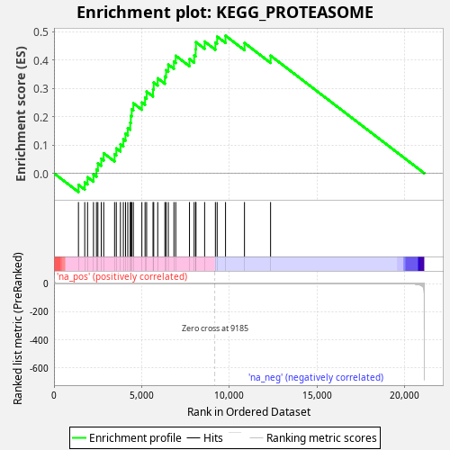
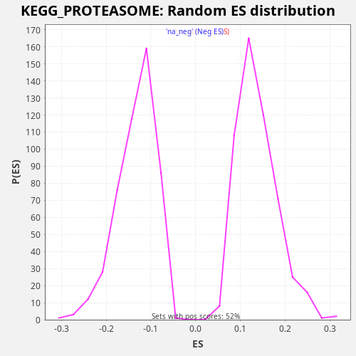

| Dataset | CCLE |
| Phenotype | NoPhenotypeAvailable |
| Upregulated in class | na_pos |
| GeneSet | KEGG_PROTEASOME |
| Enrichment Score (ES) | 0.48635134 |
| Normalized Enrichment Score (NES) | 3.5611615 |
| Nominal p-value | 0.0 |
| FDR q-value | 0.0 |
| FWER p-Value | 0.0 |

| SYMBOL | RANK IN GENE LIST | RANK METRIC SCORE | RUNNING ES | CORE ENRICHMENT | |
|---|---|---|---|---|---|
| 1 | PSMD2 | 1395 | 0.015 | -0.0405 | Yes |
| 2 | PSMB6 | 1754 | 0.009 | -0.0319 | Yes |
| 3 | PSMA1 | 1914 | 0.007 | -0.0138 | Yes |
| 4 | PSMD6 | 2252 | 0.005 | -0.0041 | Yes |
| 5 | PSMC6 | 2423 | 0.004 | 0.0135 | Yes |
| 6 | PSMC3 | 2504 | 0.004 | 0.0353 | Yes |
| 7 | PSMB5 | 2697 | 0.003 | 0.0519 | Yes |
| 8 | POMP | 2836 | 0.003 | 0.0710 | Yes |
| 9 | PSMD11 | 3456 | 0.002 | 0.0672 | Yes |
| 10 | PSMC4 | 3555 | 0.002 | 0.0882 | Yes |
| 11 | PSMD8 | 3789 | 0.001 | 0.1028 | Yes |
| 12 | PSMD1 | 3956 | 0.001 | 0.1206 | Yes |
| 13 | PSMD13 | 4080 | 0.001 | 0.1404 | Yes |
| 14 | PSMF1 | 4209 | 0.001 | 0.1600 | Yes |
| 15 | PSMB2 | 4348 | 0.001 | 0.1791 | Yes |
| 16 | PSMB4 | 4384 | 0.001 | 0.2030 | Yes |
| 17 | PSMC1 | 4435 | 0.001 | 0.2263 | Yes |
| 18 | PSMA2 | 4527 | 0.001 | 0.2476 | Yes |
| 19 | PSMD3 | 5013 | 0.001 | 0.2503 | Yes |
| 20 | PSMB7 | 5195 | 0.000 | 0.2673 | Yes |
| 21 | PSMA5 | 5284 | 0.000 | 0.2888 | Yes |
| 22 | PSMB8 | 5649 | 0.000 | 0.2972 | Yes |
| 23 | PSMA6 | 5689 | 0.000 | 0.3210 | Yes |
| 24 | PSME3 | 5917 | 0.000 | 0.3358 | Yes |
| 25 | PSMB9 | 6325 | 0.000 | 0.3422 | Yes |
| 26 | PSMD12 | 6394 | 0.000 | 0.3646 | Yes |
| 27 | PSMD14 | 6521 | 0.000 | 0.3843 | Yes |
| 28 | PSMB1 | 6842 | 0.000 | 0.3947 | Yes |
| 29 | PSMC5 | 6946 | 0.000 | 0.4155 | Yes |
| 30 | PSME4 | 7729 | 0.000 | 0.4040 | Yes |
| 31 | PSMD7 | 7995 | 0.000 | 0.4171 | Yes |
| 32 | PSME2 | 8082 | 0.000 | 0.4387 | Yes |
| 33 | PSMD4 | 8098 | 0.000 | 0.4636 | Yes |
| 34 | PSMC2 | 8593 | 0.000 | 0.4658 | Yes |
| 35 | PSMA4 | 9207 | -0.000 | 0.4624 | Yes |
| 36 | PSMA7 | 9307 | -0.000 | 0.4833 | Yes |
| 37 | PSMA3 | 9785 | -0.000 | 0.4864 | Yes |
| 38 | PSMB10 | 10866 | -0.000 | 0.4608 | No |
| 39 | PSME1 | 12355 | -0.000 | 0.4158 | No |

{kind=link}
{kind=link}